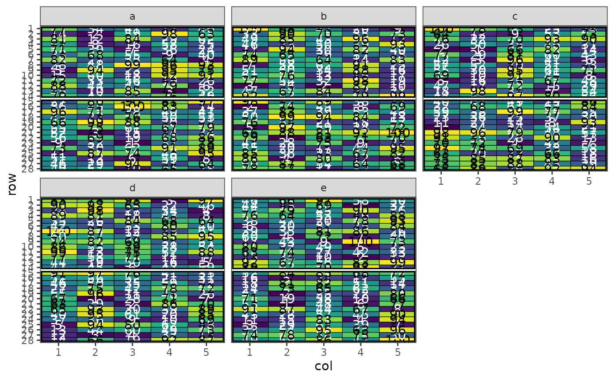
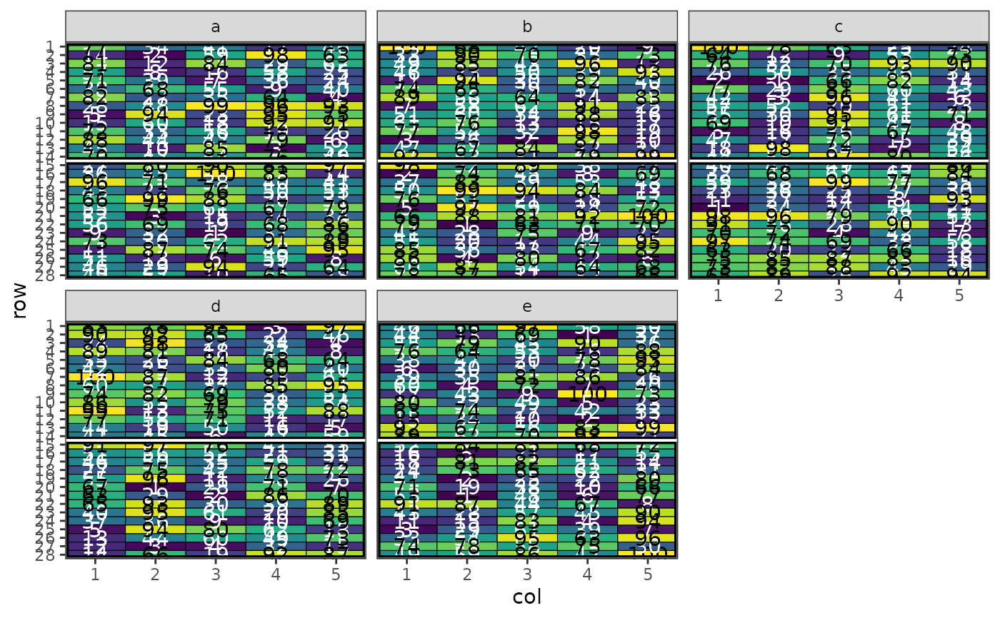

Optimises the spatial layout of experimental designs using simulated annealing to minimise treatment adjacency and maintain treatment balance across spatial factors. Works with regular or irregular spatial designs.
Usage
speed(
data,
swap,
swap_within = "1",
spatial_factors = ~row + col,
grid_factors = list(dim1 = "row", dim2 = "col"),
iterations = 10000,
early_stop_iterations = 2000,
obj_function = objective_function,
swap_all = FALSE,
optimise = NULL,
optimise_params = optim_params(),
quiet = FALSE,
seed = NULL,
...
)Arguments
- data
A data frame containing the experimental design with spatial coordinates
- swap
A column name of the items to be swapped (e.g.,
treatment,variety,genotype, etc). For hierarchical designs, provide a named list where each name corresponds to a hierarchy level (e.g.,list(wp = "wholeplot_treatment", sp = "subplot_treatment")). See details for more information.- swap_within
A string specifying the variable that defines a boundary within which to swap treatments. Specify
"1"or"none"for no boundary (default:"1"). Other examples might be"block"or"replicate"or even"site". For hierarchical designs, provide a named list with names matchingswapto optimise a hierarchical design such as a split-plot. See details for more information.- spatial_factors
A one-sided formula specifying spatial factors to consider for balance (default:
~row + col).- grid_factors
A named list specifying grid factors to construct a matrix for calculating adjacency score,
dim1for row anddim2for column. (default:list(dim1 = "row", dim2 = "col")).- iterations
Maximum number of iterations for the simulated annealing algorithm (default: 10000). For hierarchical designs, can be a named list with names matching
swap.- early_stop_iterations
Number of iterations without improvement before early stopping (default: 2000). For hierarchical designs, can be a named list with names matching
swap.- obj_function
Objective function used to calculate score (lower is better) (default:
objective_function()). For hierarchical designs, can be a named list with names matchingswap.- swap_all
Logical; Whether to swap all matching items or a single item at a time (default: FALSE)
- optimise
A list of named arguments describing optimising parameters; see more in example.
- optimise_params
Parameters used to control the behaviour of simulated annealing algorithm. See
optim_params()for more details.- quiet
Logical; if TRUE, suppresses progress messages (default: FALSE)
- seed
A numeric value for random seed. If provided, it ensures reproducibility of results (default:
NULL).- ...
Other arguments passed through to objective functions.
Value
A list containing:
design_df - Data frame of optimised design
score - Final optimisation score
scores - Vector of scores across iterations (for simple designs) or named list of score vectors (for hierarchical designs)
temperatures - Vector of temperatures across iterations
iterations_run - Total number of iterations performed
stopped_early - Logical indicating if optimisation stopped early (for simple designs) or named logical vector (for hierarchical designs)
treatments - Vector of unique treatments (for simple designs) or named list of treatment vectors (for hierarchical designs)
seed - Random seed used for reproducibility of the design. If not set in the function, the seed is set to the third element of
.Random.seed.
Details
This function provides a very general interface for producing experimental
designs of different types. For hierarchical designs such as split-plots,
strip plots, split-split plots and similar nested structures, the key
arguments (swap, swap_within, iterations, early_stop_iterations and
obj_function) can be provided as named lists where each name corresponds
to a level in the hierarchy (e.g., "wholeplot", "subplot"). When these
arguments are provided as named lists with matching names, the optimisation
is applied sequentially at each hierarchical level, starting with the first
level and progressing through the hierarchy. This allows for different
optimisation parameters and objective functions to be applied at different
levels of the design structure. For simple (non-hierarchical) designs, these
arguments can be provided as single values. For more examples and detailed
usage, see the package vignettes.
Examples
# Create a simple design with 3 replicates of 4 treatments in a 4x3 layout
df <- data.frame(
row = rep(1:4, times = 5),
col = rep(1:5, each = 4),
treatment = rep(LETTERS[1:4], 5)
)
# Optimise the design
result <- speed(df, swap = "treatment", seed = 42)
#> row and col are used as row and column, respectively.
#> Optimising level: single treatment within whole design
#> Level: single treatment within whole design Iteration: 1000 Score: 1 Best: 1 Since Improvement: 275
#> Level: single treatment within whole design Iteration: 2000 Score: 1 Best: 1 Since Improvement: 1275
#> Early stopping at iteration 2725 for level single treatment within whole design
autoplot(result)
# Hierarchical split-plot design
df_split <- data.frame(
row = rep(1:12, each = 4),
col = rep(1:4, times = 12),
block = rep(1:4, each = 12),
wholeplot = rep(1:12, each = 4),
wholeplot_treatment = rep(rep(LETTERS[1:3], each = 4), times = 4),
subplot_treatment = rep(letters[1:4], 12)
)
result <- speed(df_split,
swap = list(wp = "wholeplot_treatment",
sp = "subplot_treatment"),
swap_within = list(wp = "block", sp = "wholeplot"),
swap_all = TRUE,
seed = 42)
#> row and col are used as row and column, respectively.
#> Optimising level: wp
#> Level: wp Iteration: 1000 Score: 100 Best: 100 Since Improvement: 1000
#> Level: wp Iteration: 2000 Score: 100 Best: 100 Since Improvement: 2000
#> Early stopping at iteration 2000 for level wp
#> Optimising level: sp
#> Early stopping at iteration 570 for level sp
# Plot wholeplot allocations within blocks
autoplot(result, treatments = "wholeplot_treatment")
# Plot subplot allocations within wholeplots
autoplot(result, treatments = "subplot_treatment", block = "wholeplot")
 # Using optimise parameter
# Multi-Environment Trial (MET) design
# With 7 replicates of 100 lines in this design, each line will appear
# twice at two different sites and once at the rest of the sites.
lines <- rep(1:100, 7)
df_site <- initialise_design_df(1, 28, 5, 14, 5)
df_initial <- rbind(df_site, df_site, df_site, df_site, df_site)
df_initial$lines <- lines
df_initial$site <- rep(c("a", "b", "c", "d", "e"), each = 140)
df_initial$site_row <- paste(df_initial$site, df_initial$row, sep = "_")
df_initial$site_col <- paste(df_initial$site, df_initial$col, sep = "_")
df_initial$site_block <- paste(df_initial$site, df_initial$block, sep = "_")
optimise <- list(
connectivity = list(spatial_factors = ~site),
balance = list(swap_within = "site", spatial_factors = ~ site_col + site_block)
)
result <- speed(
data = df_initial,
swap = "lines",
optimise = optimise,
optimise_params = optim_params(random_initialisation = TRUE, adj_weight = 0),
seed = 112,
quiet = TRUE
)
head(table(result$design_df$lines, result$design_df$site))
#>
#> a b c d e
#> 1 1 1 2 1 2
#> 2 1 2 1 1 2
#> 3 2 1 1 2 1
#> 4 1 1 1 2 2
#> 5 1 1 1 2 2
#> 6 2 1 1 1 2
# Plot the MET design with facets
autoplot(result, treatments = "lines") +
ggplot2::facet_wrap(~site)

# Using optimise parameter
# Multi-Environment Trial (MET) design
# With 7 replicates of 100 lines in this design, each line will appear
# twice at two different sites and once at the rest of the sites.
lines <- rep(1:100, 7)
df_site <- initialise_design_df(1, 28, 5, 14, 5)
df_initial <- rbind(df_site, df_site, df_site, df_site, df_site)
df_initial$lines <- lines
df_initial$site <- rep(c("a", "b", "c", "d", "e"), each = 140)
df_initial$site_row <- paste(df_initial$site, df_initial$row, sep = "_")
df_initial$site_col <- paste(df_initial$site, df_initial$col, sep = "_")
df_initial$site_block <- paste(df_initial$site, df_initial$block, sep = "_")
optimise <- list(
connectivity = list(spatial_factors = ~site),
balance = list(swap_within = "site", spatial_factors = ~ site_col + site_block)
)
result <- speed(
data = df_initial,
swap = "lines",
optimise = optimise,
optimise_params = optim_params(random_initialisation = TRUE, adj_weight = 0),
seed = 112,
quiet = TRUE
)
head(table(result$design_df$lines, result$design_df$site))
#>
#> a b c d e
#> 1 1 1 2 1 2
#> 2 1 2 1 1 2
#> 3 2 1 1 2 1
#> 4 1 1 1 2 2
#> 5 1 1 1 2 2
#> 6 2 1 1 1 2
# Plot the MET design with facets
autoplot(result, treatments = "lines") +
ggplot2::facet_wrap(~site)
